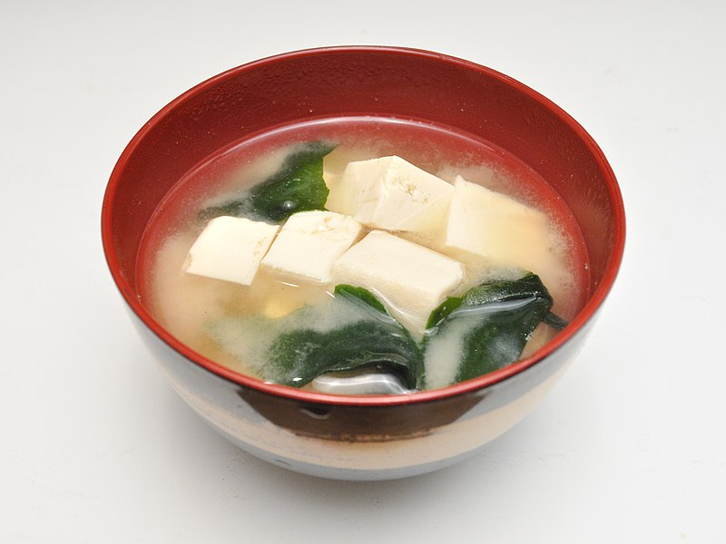

Miso Soup

Miso soup is a traditional Japanese soup that starts with a dashi stock and is flavored with miso paste.
Dashi is an umami-rich stock made from dried seaweed and dried fish. Miso paste, meanwhile, is a paste made from soybeans, salt, and koji rice.
The brothy soup usually contains tofu and green onions. It can also feature seaweed, mushrooms, daikon, and more.
Ingredients
- 4 cups of water
- 2 teaspoons of dashi granules
- 3 tablespoons of miso paste
- 1 (8 ounce) package silken tofu, diced
- 2 green onions, sliced diagonally into 1/2 inch pieces
Steps
- Combine water and dashi granules in a medium saucepan over medium-high heat; bring to a boil.
- Reduce heat to medium and whisk in miso paste. Stir in tofu. Separate the layers of green onions, and add them to the soup.
- Simmer gently for 2 to 3 minutes before serving.